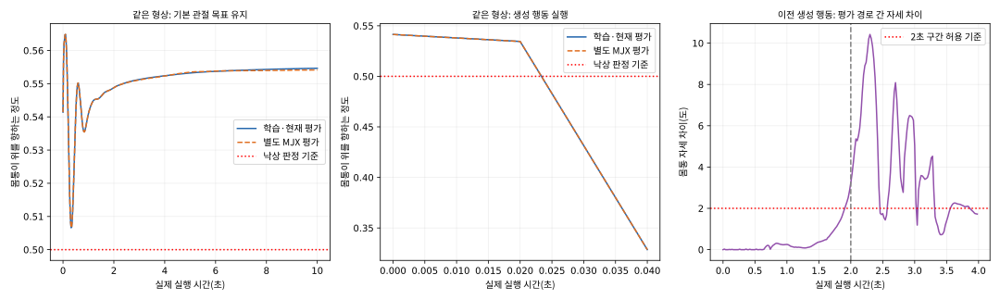

기준 형상 · 2초 정지 유지
CPU 2.00초, MJX 2.00초 실행. 비교 결과는 허용 오차 이내입니다.
같은 형상에서 기본 관절 목표는 두 환경 모두 10초를 유지했지만, 생성 행동은 두 환경에서 거의 즉시 넘어졌습니다.
다음에는 생성된 첫 관절 목표와 그 변화량을 확인해야 합니다. 환경을 바꾸거나 학습 횟수를 늘리기 전에, 왜 이 행동이 로봇을 넘어뜨리는지 확인하는 것이 우선입니다.
이전 생성 행동 한 사례는 처음 2초 동안 몸통 자세 차이가 최대 3.24도로, 사전 기준 2도를 넘었습니다. 64비트 추가 검사에서도 차이가 남아, 계산 정밀도만 바꾸는 것으로 해결되지는 않았습니다.
따라서 별도 MJX 평가 경로까지 완전히 같다고 결론 내리지는 않습니다. 현재 보고서의 CPU 평가에서 발생한 즉시 낙상과는 구분해야 합니다.

왼쪽은 기본 관절 목표로 버티는 모습, 가운데는 생성 행동을 적용했을 때의 낙상입니다. 오른쪽은 별도로 남아 있는 두 실행 경로의 자세 차이입니다.
CPU 2.00초, MJX 2.00초 실행. 비교 결과는 허용 오차 이내입니다.
CPU 10.00초, MJX 10.00초 실행. 비교 결과는 허용 오차 이내입니다.
CPU 2.00초, MJX 2.00초 실행. 비교 결과는 허용 오차 이내입니다.
CPU 10.00초, MJX 10.00초 실행. 비교 결과는 허용 오차 이내입니다.
CPU 3.98초, MJX 3.98초 실행. 움직임 차이가 허용 기준을 넘었습니다.
CPU 3.98초, MJX 3.98초 실행. 비교 결과는 허용 오차 이내입니다.
두 경로 모두 실행 전에 거부했습니다. 움직임이 일치한 사례로 세지 않습니다.
CPU 0.04초, MJX 0.04초 낙상. 비교 결과는 허용 오차 이내입니다.
같은 E·초기 자세와 속도·행동을 사용했습니다. 허용 오차는 실험 전에 정했습니다. 이번 결과는 비교한 사례에 한정되며, 모든 형상과 행동에서의 일치나 과제 성공을 보장하지 않습니다.